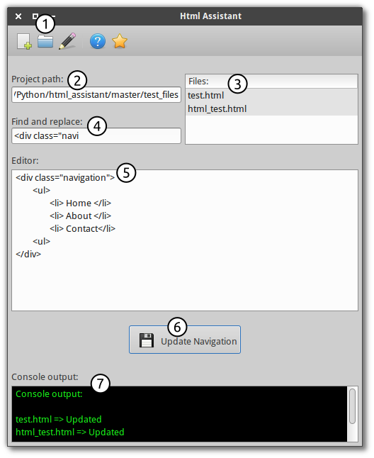

Unfortunately I did not have the time to thorougly test it, so before you
jump in and start using it on 100 page long websites,
at least make a backup of your files.
Most of the guides, tend to forget about the newbies, that do not know what to do with source files obtained from Github, so I will try to describe everything in detail.
First you need to download source files (they are in source folder). Source folder should contain four items:
Now delete all the folders that you don't need (keep
only source folder). Next follow the instruction below (1.1 or 1.2),
according to your operating system.
In case you are wondering what each of the files does:
main.py - contains all python code
assistant.glade - defines user interface
style.css - changes style of the user interface
config.json - it's like a database for Html Assistant.
It contains templates, latest used project path, etc...
1.1 Linux:
Html Assistant was built with Python3 and Gtk+ 3. If you are using Linux, you can consider yourself lucky, since they are installed by default, so you can skip to section 2.
I am using Ubuntu, if you are using some other distribution, you might have to install python3 and Gtk+ 3 manually.
1.2 Mac & Windows:
In order to use Html Assistant you need Python3 and Gtk+ 3 installed. Check their websites for installation guides.
Please note, I am not using Mac or Windows OS, so there
is a great chance that the Html Assistant will not work, because of
their way of dealing with file paths.
2. Usage

First we Run Html Assistant, I prefer to run it via command line.
I cd to the right directory (where Html Assistant is located) and type
python3 main.py.
Click on the
button
[number 1 on picture] to select folder which contains .html files.
Path is automatically added to the textbox [number 2 on
picture]. Files from the specified project (folder) are
automatically added into list view [number 3 on
picture].
Specify the element you would like to replace [number 4
on picture]. For example you would like to replace the
following div:
<div class="navigation">
<ul>
<li> First link </li>
<li> Second link </li>
</ul>
</div>
so we type in the text field [number 4 on picture] <div class="navigation
Write or paste new navigation in the editor window
[number 5 on picture] for example:
<div class="new_navigation">
<ul>
<li> Home </li>
<li> About </li>
<li> Contact </li>
</ul>
</div>
Make sure that you write whole navigation not just the inside part (ul & li). Html Assistant rewrites the entire part of the page specified in [number 4 on picture] to the closing tag.
When you are done with writing your new navigation press
button [number 6 on picture].
You can see which files changed in console at the bottom of the Html Assistant window [number 7 on picture].
That's it. All files from the project folder are now updated with the new navigation.
Keep in mind the navigation is not the only part of the html pages, that you can replace with this software. You can also use it to replace footer, div with certain class or id, etc...
Opens window where you are able to select predefined templates
and create new html files in the current project folder.
Open Project
Select the folder in which you would like to keep the
navigation / footer / header consistent.
Edit Templates
Opens a window, where you are able to create new, update or
delete existing templates. Templates are used only when you are
creating new html files via new file menu icon
[number 1 in menu].
Help
Opens documentation website in your default browser.
About
Displays all information about Html Assistant.
4. Contact
If you find any bug, please do not hesitate to create an issue on Github and I will try to fix it.
I hope you have as much fun using this software, as much as I had writing it. If you would like to share your story how this program helped you when creating website, feel free to contact me via my Website
Extra option that will turn html code into code for
embedding on your website - Convert the characters '&', '<', '>', " (double quote), and ' (apostrophe), in a string to their corresponding HTML entities.
If you have the time and will to implement any of the desired features
feel free to create pull request and we will discuss it there!